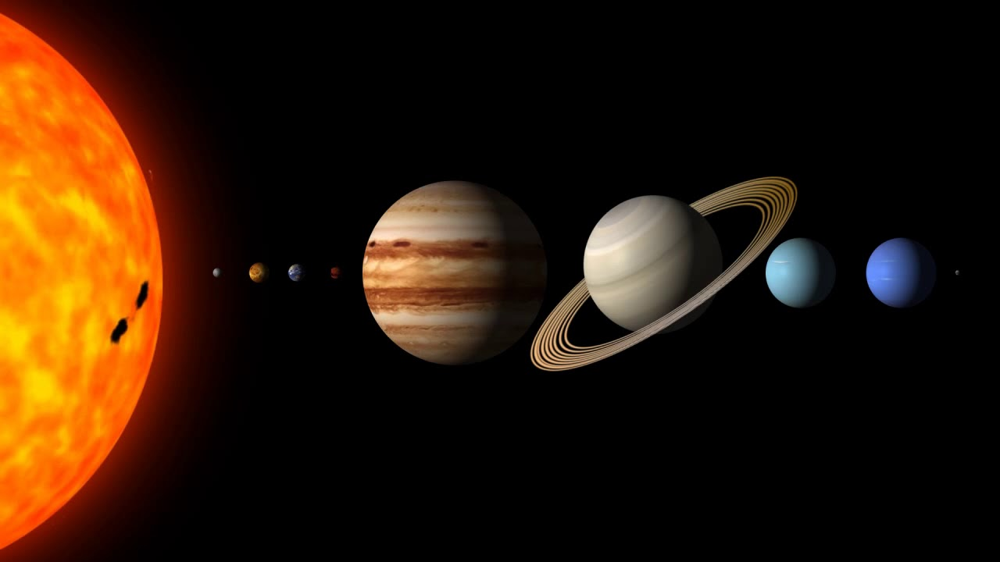
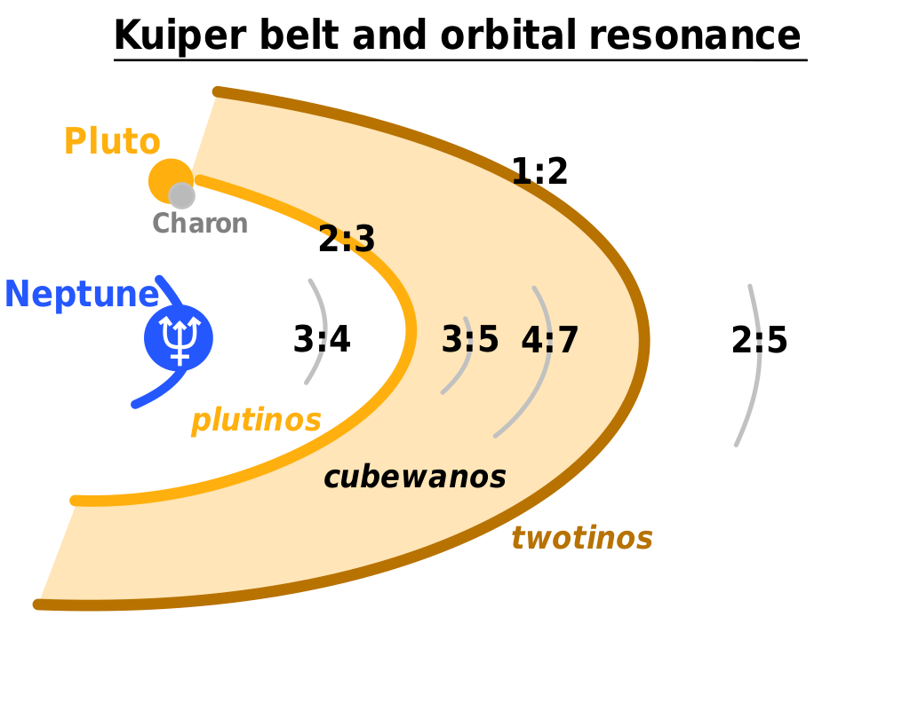

Contents
IntroductionThe solar system comprises 8 planets, approximately 170 natural planetary satellites(moons), and countless asteroids, meteorites, and comets.assemblage consisting of the Sun—an average star in the Milky Way Galaxy—and those bodies orbiting around it: 8 (formerly 9) planets with more than 210 known planetary satellites (moons); many asteroids, some with their own satellites; comets and other icy bodies; and vast reaches of highly tenuous gas and dust known as the interplanetary medium. The solar system is part of the "observable universe"a the region of space that humans can actually or theoretically observe with the aid of technology. Unlike the observable universe, the universe is possibly infinite.
The Solar System formed 4.568 billion years ago from the gravitational collapse of a region within a large molecular cloud.[a] This initial cloud was likely several light-years across and probably birthed several stars. As is typical of molecular clouds, this one consisted mostly of hydrogen, with some helium, and small amounts of heavier elements fused by previous generations of stars.
here are eight planets in the solar system. The four inner terrestrial planets are Mercury ,Venus, Earth, andMars, all of which consist mainly of rock. The four outer planets are Jupiter, Saturn, Neptune, andUranus, giant planets that consist mainly of either gases or ice. Pluto was considered the ninth planet until 2006, when the International Astronomical Union voted to classify Pluto as a dwarf planet instead.
Astronomers sometimes divide the Solar System structure into searate regions. The inner Solar System includes the Mercury, Venus, Earth, Mars and bodies in the asteroid belt. The outer Solar System includes the Jupiter, Saturn, Uranus, Neptune and bodies in the Kuiper belt. Since the discovery of the Kuiper belt, the outermost parts of the Solar System are considered a distinct region consisting of the objects beyond Neptune.
The inner Solar System is the region comprising the terrestrial planets and the asteroid belt. Composed mainly of silicates and metals,the objects of the inner Solar System are relatively close to the Sun; the radius of this entire region is less than the distance between the orbits of Jupiter and Saturn. This region is within the frost line, which is a little less than 5 AU (750 million km; 460 million mi) from the Sun. The inner Solar System is home to the zodiacal dust cloud. It causes the hazy zodiacal light in the dark, unpolluted sky. It may have been formed by collisions within the asteroid belt brought on by gravitational interactions with the planets; a more recent proposed origin is materials from planet Mars.

The outer region of the Solar System is home to the giant planets and their large moons. The centaurs and many short-period comets orbit in this region. Due to their greater distance from the Sun, the solid objects in the outer Solar System contain a higher proportion of volatiles, such as water, ammonia, and methane than those of the inner Solar System because the lower temperatures allow these compounds to remain solid, without significant rates of sublimation. The outer Solar System hosts a cosmic dust cloud. It extends from about 10 AU (1.5 billion km; 930 million mi) to about 40 AU (6.0 billion km; 3.7 billion mi), and was probably created by collisions within the Kuiper belt.
